Aula #12 · Reconhecer o risco
Avaliação da via aérea: anatomia e fisiologia do adulto e da criança.
Profa. Carla Gamba, MSc
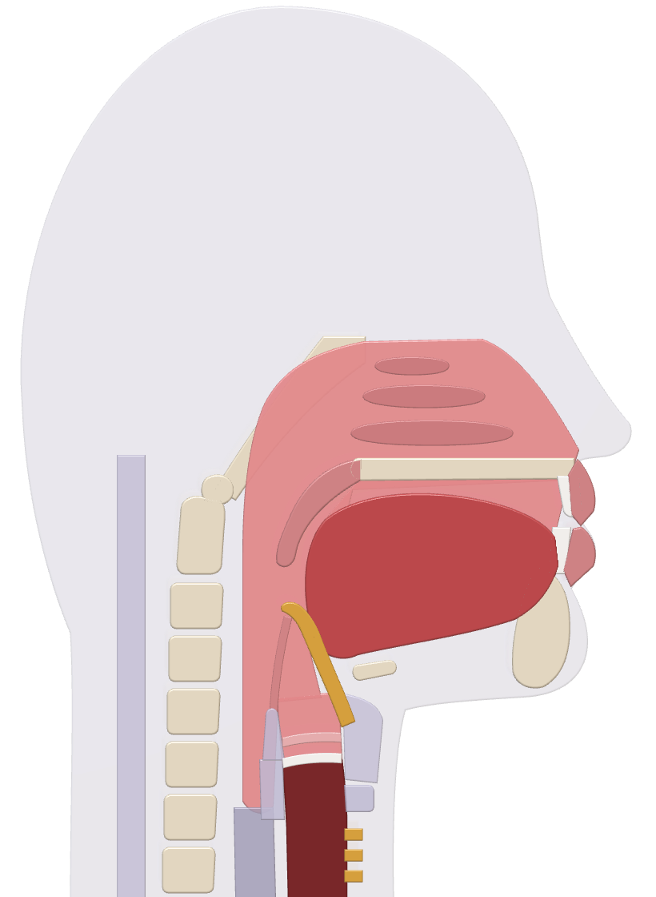
Profa. Carla Gamba, MSc
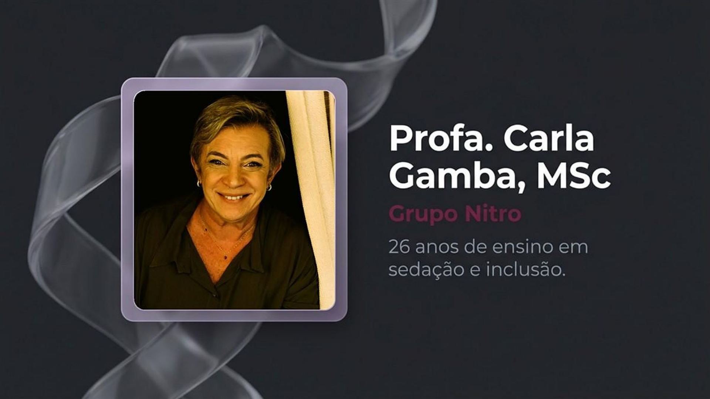
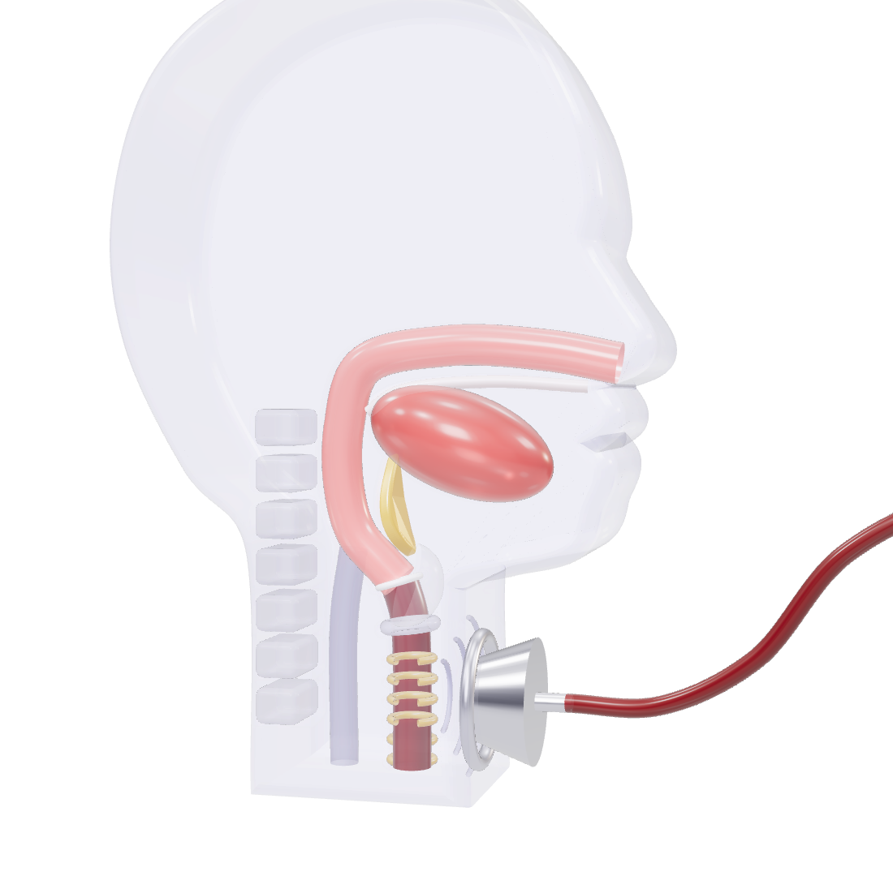
processo mecânico de renovação do gás alveolar, determinado pelo fluxo aéreo entre a atmosfera e os alvéolos
transferência de O₂ dos alvéolos para o sangue capilar pulmonar, por difusão através da membrana alvéolo-capilar
fluxo sanguíneo através da microcirculação tecidual, responsável pelo aporte de O₂ e substratos metabólicos às células
A oximetria de pulso é um indicador tardio da falência ventilatória, sobretudo sob O₂ suplementar (Bastos e Ceccon).
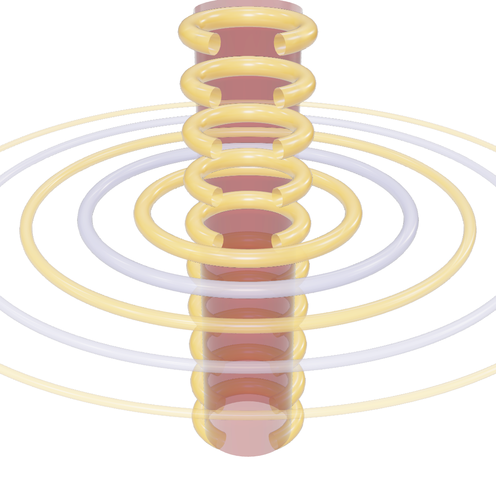
baixa frequência, áspero
supraglótico · língua e palato mole
elevação do mento, anteriorização da mandíbula
borbulhante, úmido
faringe · saliva, sangue, água de refrigeração
aspiração
descriçãoagudo, inspiratório
laringe estreitada · laringoespasmo parcial, corpo estranho, edema
musical, expiratório
brônquios · broncoespasmo, anafilaxia
o sinal de maior gravidade
obstrução completa
depressão respiratória central
Estetoscópio pré-traqueal: primeiro monitor a detectar o evento em 64% dos casos; oxímetro, 15%. Boriosi et al., 2019
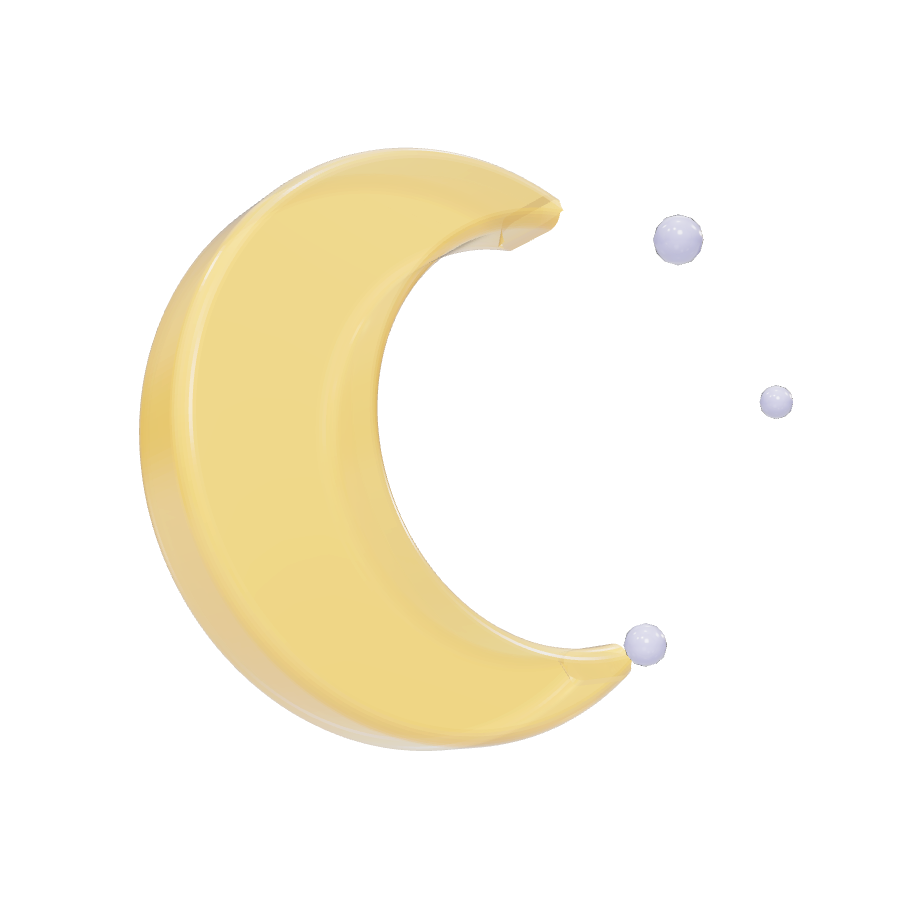
de mil pacientes de clínicas odontológicas com escore ≥ 3
pacientes de alto risco, sem diagnóstico, encaminhados
palato mole, fauces, úvula e pilares
palato mole, fauces e úvula
palato mole e base da úvula
apenas o palato duro
El-Ganzouri e colaboradores, 1996: 10.507 pacientes consecutivos, sete preditores independentes.
anamnese
exame físico de cabeça e pescoço: território do cirurgião-dentista
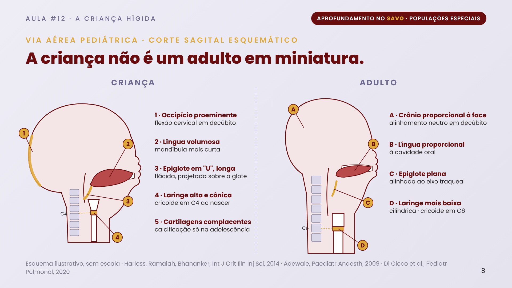
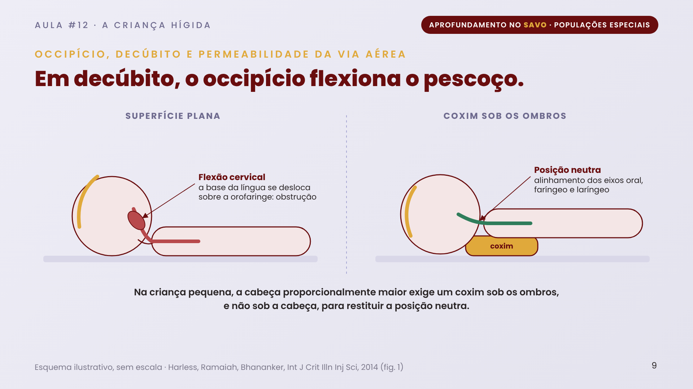
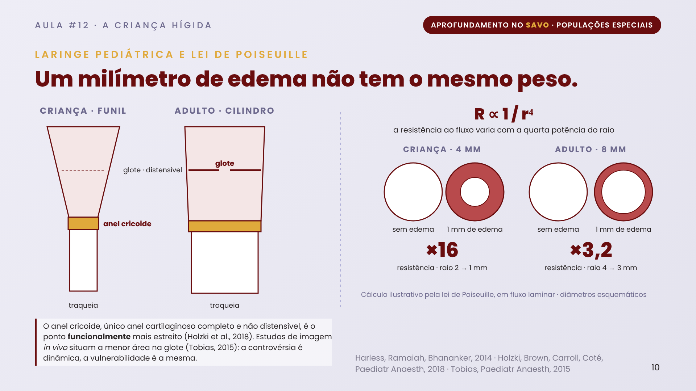
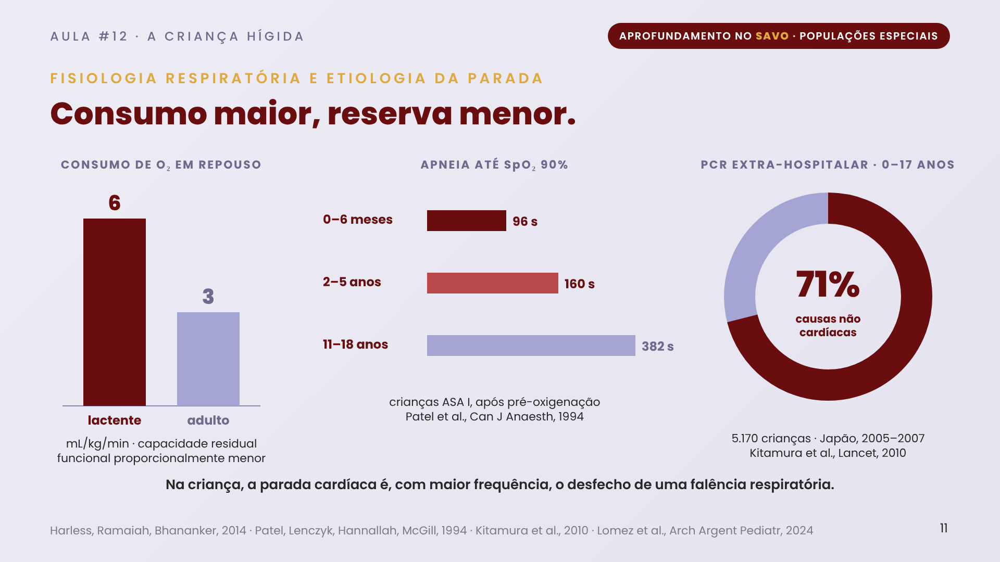
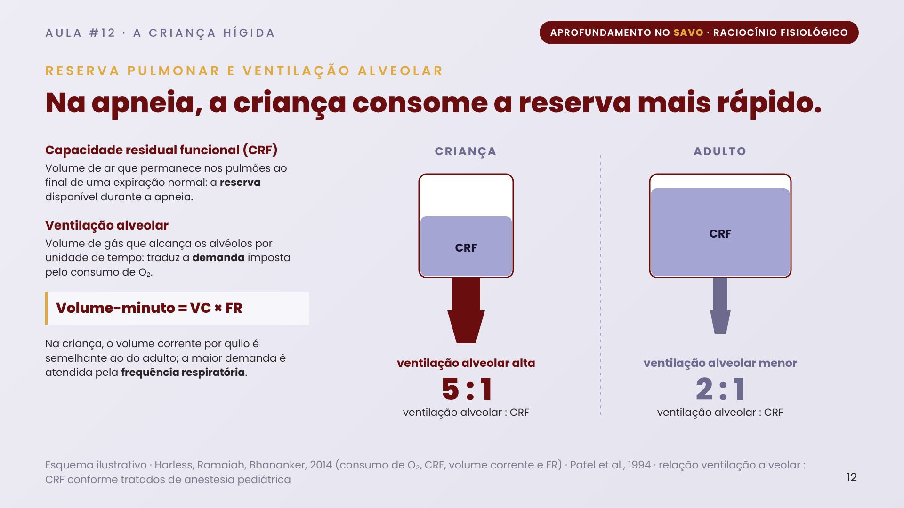
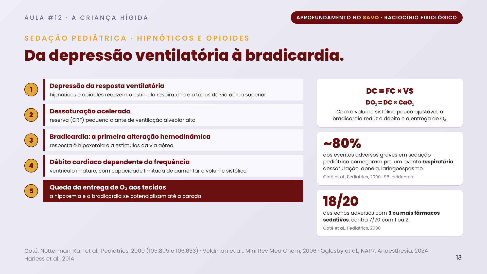
mais chance de hipoxemia em crianças com sobrepeso ou obesidade sob sedação para tratamento odontológico
IMC > 35 kg/m²
massa corporal
ronco, sonolência diurna, apneia testemunhada, hipertensão arterial
índice de massa corporal e circunferência cervical
Mallampati, abertura bucal, protrusão mandibular, distância tireomentoniana
STOP-Bang elevado: encaminhar · SARI elevado: plano de manejo da via aérea
o prontuário documenta a avaliação realizada
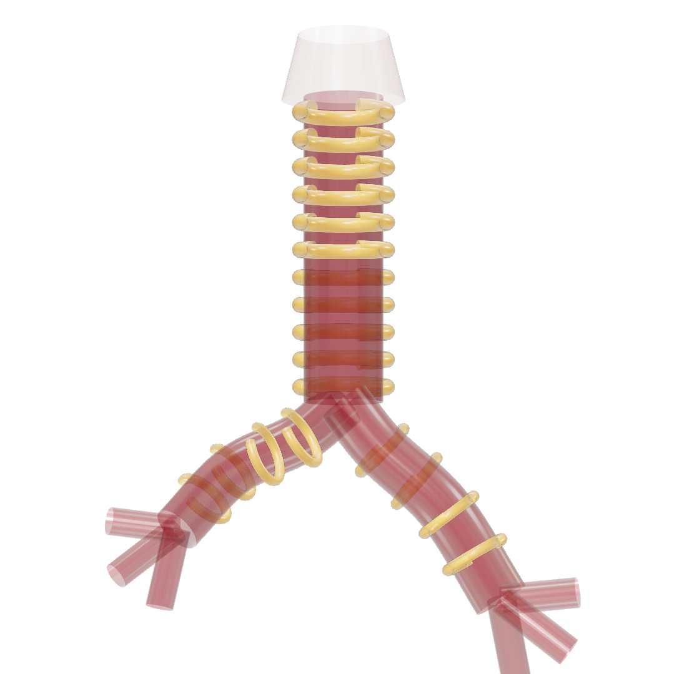
Pré-oxigenação · posicionamento para o atendimento · posicionamento na emergência
Suporte Avançado de Vida para a Odontologia: monitorização, avaliação clínica, farmacologia e resposta à emergência, com etapa presencial no Rio de Janeiro.
Complementação de carga horária e certificações para a Habilitação Básica em Sedação.
Nenhum curso habilita, inclusive o nosso. A avaliação e a decisão competem ao Conselho.